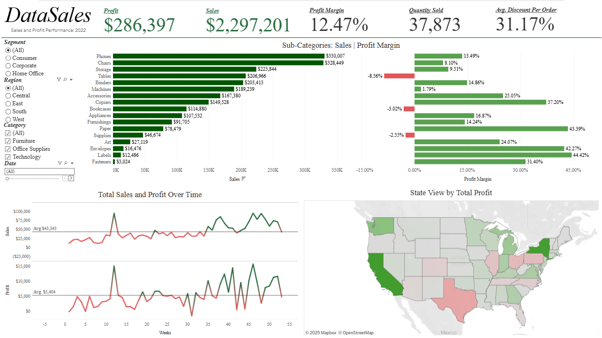

● Modeled correlated multi-outcome probabilities using conditional probability, estimating true joint success rates of ~15–17% versus some market's implied rates near ~12%.
● Identified positive expected value opportunities by comparing modeled probabilities to platform pricing (+700 to +850), revealing consistent probability gaps of ~3–5%.
● Validated the framework through both Monte Carlo simulation (500 runs, <2% loss rate) and real-world execution, generating approximately 75 units of profit over a short evaluation period.

● Performed exploratory data analysis using SQL on over 10,000 retail order records to uncover patterns in product categories, customer segments, and geographic performance.
● Identified key issues such as low-margin product lines, high-loss states, and inconsistent discounting strategies through detailed aggregation, filtering, and profit margin calculations.
● Created a business-focused executive summary report highlighting critical problems and offering strategic recommendations to improve profitability, optimize discount ranges, and target high-performing regions.

● Wrote optimized SQL queries with multi-table joins and aggregations to calculate core business metrics like total revenue, average order value, and top-selling products.
● Connected SSMS to Power BI and built an interactive, filterable dashboard to track KPIs, store performance, and sales trends across product categories.
● Designed clean visualizations and slicers to support real-time insights, demonstrating end-to-end analytics skills from data wrangling to business-ready reporting.

● Developed an interactive dashboard with slicer filters to visualize key metrics and used Pivot tables to identify trends, presenting findings through bar charts, line graphs, and pie charts.
● Used Power Query to clean and transform data, create additional columns, and reshape the dataset, improving clarity for analysis purposes.
● Implemented forecasting techniques to predict future sales trends, performance patterns, and opportunities for improvement.
● Designed an ER diagram to define relationships and business rules for the database.
● Created a SQL database with simulated data, constraints, and triggers for automation.
● Executed queries to form reports aiming to analyze trip history, driver performance, and payment details.